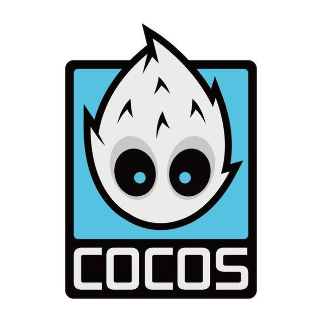

Cocos2d는 2D 게임 개발용 오픈 소스 소프트웨어 프레임워크이다. 게임과 모바일 앱, 반응형 전자책 등 GUI 기반 상호작용 소프트웨어의 개발에 사용할 수 있다.

Cocos2d는 Cocos2d-x, Cocos2d-JS, Cocos2d-XNA, Cocos2d-Swift 등 Cocos2d에서 파생된 여러 자식 프레임워크를 포함한다.
Cocos2d 커뮤니티에는 독립 편집자들이 일부 있는데, 이들은 스프라이트시트 편집, 파티클 편집, 글꼴 편집, 타일맵 편집, 또 스프라이트빌더와 코코스튜디오를 포함한 월드 에디터 분야에 기여하고 있다.